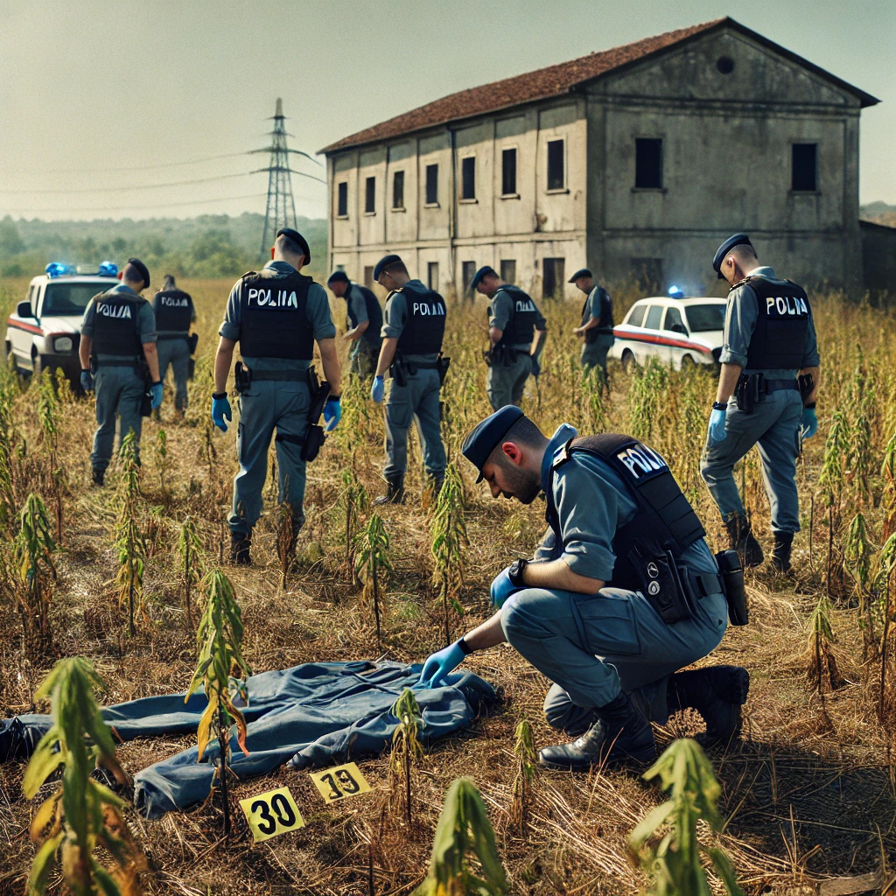

Nell'estate del 1986, Torrita di Siena fu teatro di una serie di delitti che scossero profondamente la comunità. Misteriosi omicidi lasciarono il paese in uno stato di paura e incertezza, con pochi indizi e molte domande senza risposta. Le vittime, trovate nei pressi di luoghi isolati, sembravano non avere nessun legame apparente, alimentando un clima di terrore.
Gli abitanti di Torrita di Siena vivevano nel terrore mentre la serie di delitti continuava. La polizia intensificò i pattugliamenti, ma ogni indagine sembrava arenarsi senza portare a nulla di concreto. Le famiglie evitavano di uscire dopo il tramonto e la tensione cresceva a ogni nuovo tragico ritrovamento.
 Nonostante gli sforzi delle autorità, nessun colpevole fu mai identificato. Le poche tracce rinvenute sul luogo dei delitti erano spesso inconcludenti. Le testimonianze degli abitanti erano contraddittorie e le ipotesi si moltiplicavano, senza mai portare a una pista sicura. Gli investigatori, pur lavorando giorno e notte, sembravano sempre un passo indietro rispetto agli eventi.
Alcuni dei delitti avvennero in prossimità di luoghi già avvolti da storie e leggende. Un casolare abbandonato nelle campagne e altri luoghi isolati divennero parte integrante del mistero. La gente del posto iniziò a parlare di maledizioni e presenze oscure, cercando spiegazioni a ciò che razionalmente non riuscivano a comprendere.
A distanza di quarant'anni, i delitti dell'86 rimangono un capitolo oscuro nella storia di Torrita di Siena. Nessun colpevole è mai stato trovato, e i pochi documenti rimasti raccontano una storia di paura e angoscia che la comunità non dimenticherà facilmente. La vicenda è ancora avvolta nel mistero, un enigma irrisolto che continua ad affascinare e inquietare chiunque provi a far luce su quegli eventi drammatici.